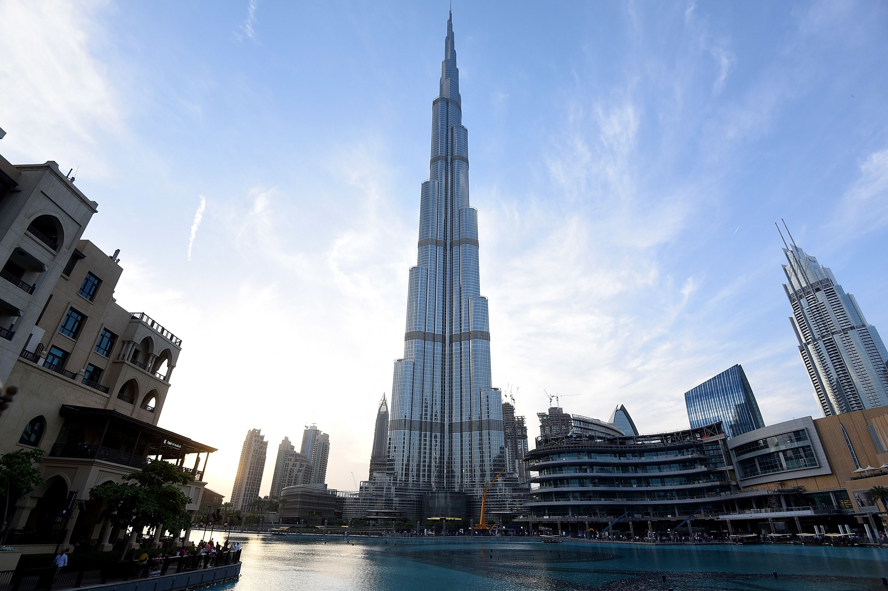
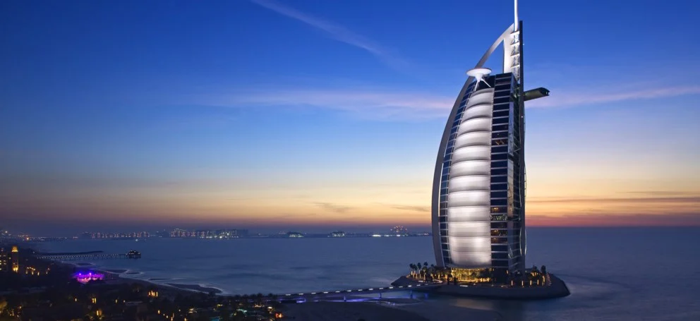
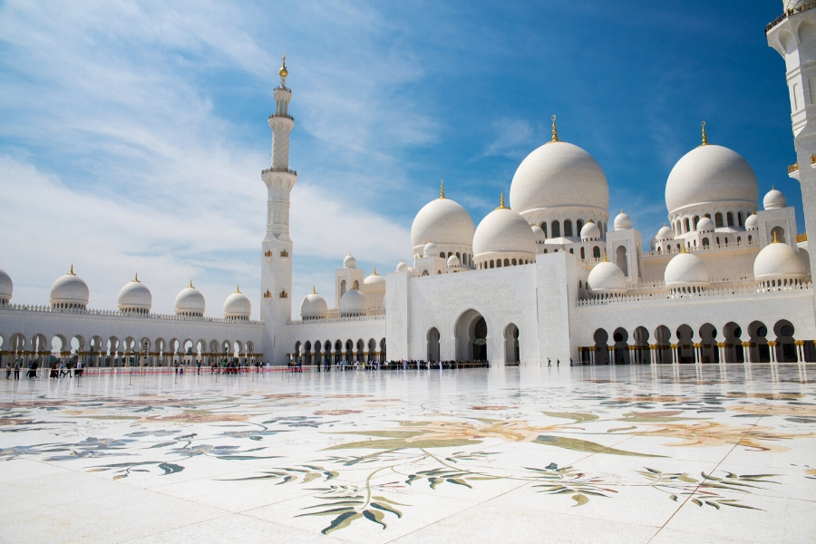

Sights
The U.A.E. is a beautiful country with some truly breathtaking sights including groundbreaking architecture. Here are three of the many great sights the U.A.E. has to offer.
1. The Burj Khalifa (Dubai)
The Burj Khalifa is a beautiful and impressive feat of architecture. The view at the top is breathtaking and lets you see the entire city from a bird’s eye view. The tower is the tallest building in the world at 828 meters from sea level. Construction started in 2004 and was finished by 2009. It being such an impressive building has garnered a lot of tourist attention and helped the U.A.E. to slightly shift their economy away from oil to tourism. Tickets to the top of the tower costs around €55 for adults during prime tourist months and hours.
The building was designed by American architect Adrian Smith and his team. It’s designed after a flower called the Hymenocallis flower. The construction itself came to be at the price of €1,3 billion. Reinforced concrete was mainly used during construction of the building.
The elevator from the bottom of the Burj Khalifa to the top travels at 10 meters per second taking it 60 seconds to travel 124 floors. The building records other than just being the tallest building in the world. It also has the most floors and is the tallest freestanding building in the world.
2. The Burj al Arab (Dubai)
The Burj Al Arab is yet another beautiful feat of architecture. The task which Tom Wright had at his hands was to show the heritage of Arabia in the architecture of the structure. The signature bend of the structure is supposed to look like the sail of an Arabian dhow, which is the name of a traditional trading ship.
The building was constructed 1999 and stands at 321 meters above sea level. The building is situated at the coast of the Persian Gulf at the edge of Dubai providing a gorgeous view of the ocean and that part of the city
The main purpose of the building is not only to look pretty, it’s actually a hotel. The price of spending a night in one of the rooms of the Burj Al Arab is the reason why it’s not usually considered a hotel in conversation. The Burj Al Arab is considered a 7 star hotel and the cost to spend a night is around €25 000. Just to enter the building is around €130 making it a very expensive sight to visit but you can always go there and see it.
The Seikh Zayed Mosque (Abu Dhabi)
The Sheikh Zayed Mosque is the biggest mosque in the country situated in the country’s capital Abu Dhabi. The Mosque can hold 41 000 visitors consecutively. If you’re in the city this is a must-see as entry is completely free of charge.
The construction of the mosque started in 1996 and was finished in late 2007. Building was supervised by the then president of the U.A.E. Sheikh Zayed who the building is named after. The mosque also has one of the world’s largest carpets in the main hall at 5 627m2. The mosque itself covers more than 120 000m2 which is huge. Construction came at the cost of around €508 billion.
The building’s architectural style is made of a combination of different islamic ones. It has some architectural traits from Fatimid, Mamluk and Ottoman traditions. The mosque features beautiful domes of marble.The interior features one of the world’s biggest chandeliers. Weighing in at 12 tons, the chandelier consisting of stainless steel holds over 40 million Swarovski crystals.
The mosque is a symbol of unity for the U.A.E. and the world’s many islamic peoples. It’s a place of cultural exchange, where people outside of the culture can learn more of it.